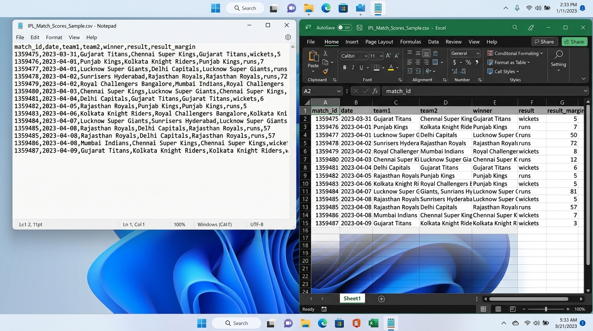
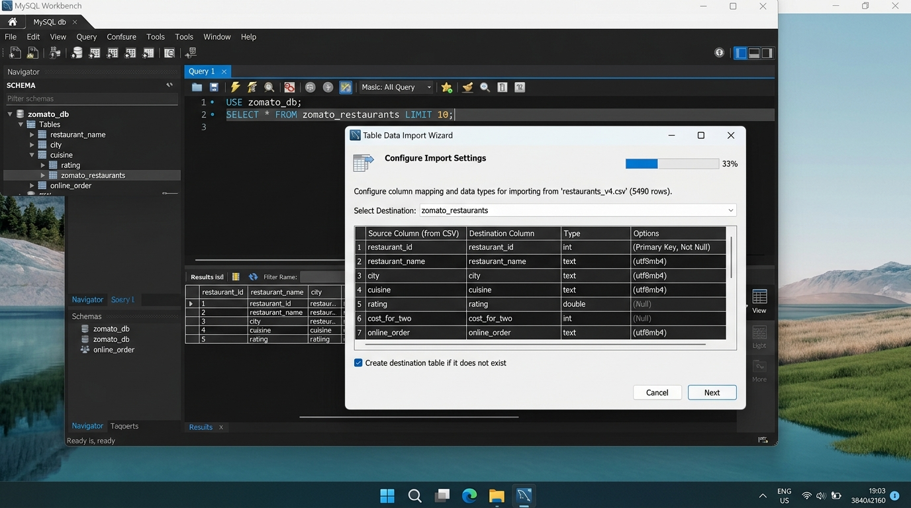

SESSION 2: Data & Databases (Structured vs Unstructured)
1. Core Concepts
- Structured Data: Strict tables and schemas (CSV, SQL tables, Excel).
- Semi-Structured Data: Self-describing schema markers (JSON, XML).
- Unstructured Data: Media, audio, free text, video streams.
- ETL vs. ELT: ETL transforms on a middle compute server before loading; ELT loads raw data into cloud data warehouses and transforms on demand.
- OLTP vs. OLAP: OLTP processes fast live operational transactions; OLAP handles heavy historical analytical aggregations.
2. Assignment Tasks & Solutions
Task 1: CSV Comparison — Microsoft Excel vs. Notepad COMPLETED
- Difference 1 (Visual Delimiters & Structure): In Notepad, the CSV is presented as unformatted raw text where commas separate attributes and line wraps can make parsing difficult. In Excel, the comma delimiters are automatically converted into neat columns and rows with gridlines.
- Difference 2 (Data Type Inference & Formatting): Notepad renders characters literally byte-for-byte (preserving leading zeros and verbatim dates). Excel infers data types, converts dates into localized display formats, strips leading zeros from numeric codes, and aligns text left and numbers right.

Figure 2.1: Split-screen comparison of IPL_Match_Scores_Sample.csv opened in Notepad (left) and Excel (right).
Task 2: Python Script to Parse Trending Movies JSON EXECUTED
import json
with open('trending_movies.json', 'r') as f:
movies = json.load(f)
for idx, movie in enumerate(movies, start=1):
print(f"{idx}. {movie['title']} ({movie['release_year']}) — Rating: {movie['rating']}/10")
Console Output:
1. Inception (2010) — Rating: 8.8/10
2. Interstellar (2014) — Rating: 8.7/10
3. The Dark Knight (2008) — Rating: 9.0/10
4. Oppenheimer (2023) — Rating: 8.9/10
5. Dune: Part Two (2024) — Rating: 8.6/10
6. Spider-Man: Across the Spider-Verse (2023) — Rating: 8.7/10
7. Top Gun: Maverick (2022) — Rating: 8.3/10
8. Avengers: Endgame (2019) — Rating: 8.4/10
9. Parasite (2019) — Rating: 8.5/10
10. Gladiator II (2024) — Rating: 7.9/10
Task 3: MySQL Workbench Table Data Import Wizard IMPORTED
Imported Zomato restaurant data into table zomato_db.zomato_restaurants with proper column mappings (restaurant_id, restaurant_name, city, cuisine, rating, cost_for_two, online_order).

Figure 2.2: MySQL Workbench Table Data Import Wizard mapping Zomato restaurant columns.
Task 4: Difference Between ETL and ELT (Swiggy & Spotify Examples)
🚚 ETL Example — Swiggy (Food Orders):
Live order transactions contain sensitive customer PII (phone numbers, delivery addresses). During ETL, data is extracted from the transactional database, transformed on a secure middle-tier server (masking addresses and converting vouchers), and only the sanitized data is loaded into the warehouse for privacy compliance.
🎵 ELT Example — Spotify (Music Streaming):
Billions of raw streaming events (skips, plays, pauses) are extracted and immediately loaded into a scalable cloud warehouse (BigQuery/Snowflake) without prior transformation. Data scientists and analysts then run Transform jobs directly in the warehouse using SQL/dbt when generating recommendations and annual Spotify Wrapped summaries.
Task 5: Classification of Scenarios (OLTP vs. OLAP)
- Booking a movie ticket on BookMyShow: OLTP — Fast, real-time transactional write requiring immediate seat-locking and strict ACID consistency to avoid double booking.
- Generating a monthly sales report for Flipkart sellers: OLAP — Complex analytical aggregation across millions of historical order records to evaluate revenue performance.
- Adding a new contact in WhatsApp: OLTP — Low-latency, single-record atomic insert into a user's localized transactional device database.
- Analyzing IPL team performance over 5 seasons: OLAP — Multi-dimensional analytical read query aggregating historical multi-year records to calculate winning percentages and longitudinal trends.